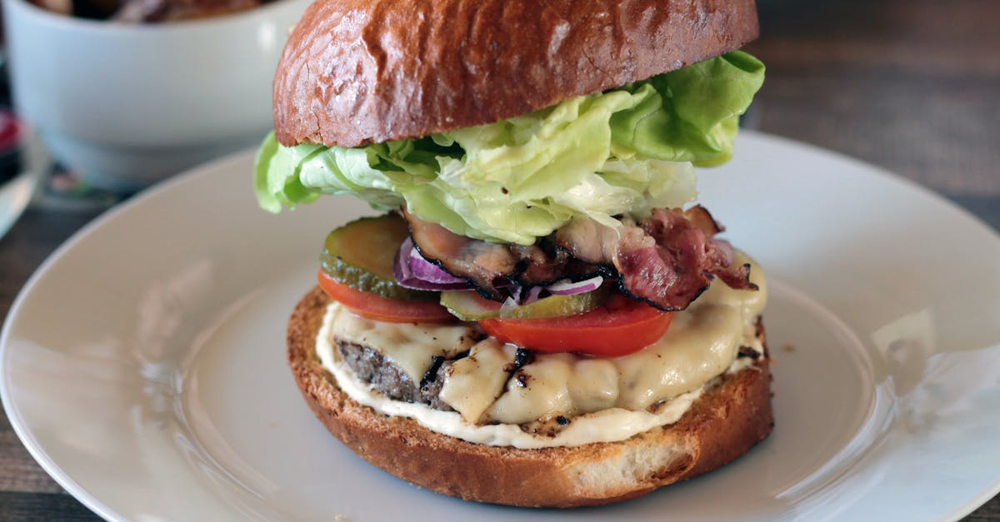

Classic Hamburger

Description
The hamburger is one of the favorite meals for children and adults,
and there are several ways to make it, this time we will show you
the classic one, and the ingredients you need to make it.
Ingredients
- 1 ½ lbs lean ground beef
- 1 tablespoon worcestershire sauce
- 1 ½ teaspoons seasoning salt
- 1 teaspoon garlic powder
- ½ teaspoon ground black pepper
- 4 slices of cheese
- 4 hamburger buns
- lettuce
- tomato
- onion
- ketchup
- mustard
- mayonnaise
Steps to make
-
Preheat grill to 375 degrees F (medium-high). In a large bowl,
add the meat. Sprinkle evenly with Worcestershire sauce,
seasoning salt, garlic powder and pepper. Use your hands to mix
the ingredients until well combined.
-
Divide the meat mixture into quarters. Take 1/4 of the meat
mixture and use your hands to press it into the shape of a patty
that is 3/4 inch thick. Make an indentation in the center of the
patty to prevent it from bulging in the center of the patty as
it cooks. Repeat with the remaining meat mixture, making 4
patties.
-
Place the burgers on the grill. Cook 5 minutes on the first
side. Flip the burgers and cook 5 more minutes, until the
burgers reach the desired doneness.
-
If adding cheese, put a slice of cheese on each patty about 1
minute before removing the burgers from the grill to give the
cheese a chance to melt.
- Serve burgers on buns with optional burger toppings.
Home